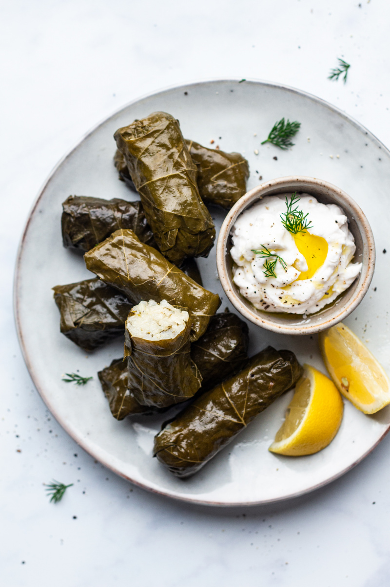

Savoury Options
-
Greek dips
Taramosalata
Melitzanosalata
Tzatziki
-
Dolmades
Dolmades refers to Greek dishes made with either cabbage or grape leaves, stuffed with a delicious rice mix, shaped into rolls and boiled until wonderfully tender.
 -
Pastitsio
Pastitsio (Greek: παστίτσιο, pastítsio) is a Greek dish made with pasta, ground meat and béchamel sauce, with variations of the dish found in other countries of the Mediterranean Sea.
Sweet Options
-
Vegan
Tahinopita
Almond Cookies
Tahinopita is a Greek cake flavoured with sesame paste. We can find variations on the recipe, like quickbread versions with chemical leaveners (such as baking soda or baking powder), yeasted versions, and phyllo layer versions. As most varieties contain no dairy, eggs, or oil, they are popular during Lent and can be considered vegan

Non Vegan
Baklava
Rizogalo
Galaktoboureko